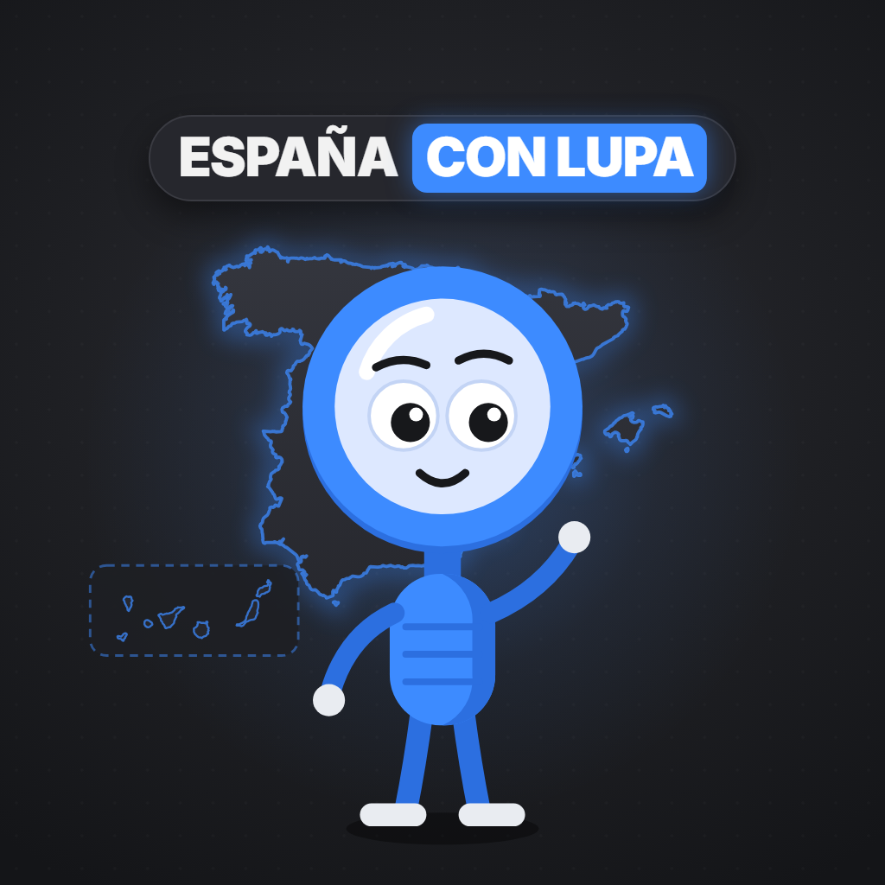

España con Lupa
@espanaalgrano · TikTok
Soy Lupa, y te explico España con lupa.
Sígueme en TikTokDe qué va
Vídeos cortos sobre cómo funciona España por dentro: instituciones, trámites, leyes y el dinero del día a día.
Datos comprobados en fuentes oficiales y explicados sin opinión de partido. Nada de política: solo lo que ves y usas cada día, mirado de cerca.
Los temas
- Por dentroCómo funcionan las instituciones y la administración.
- Ley al granoLas leyes de las que todo el mundo habla, explicadas.
- Dato de EspañaCuriosidades con fuente que cambian cómo ves las cosas.
- Tu dineroFacturas, compras y lo que pagas de verdad.
De dónde sale la información
Casi todo sale de fuentes oficiales, y cada dato lleva su fuente en el vídeo:
- BOELeyes, órdenes y normas, tal como se publican.
- Congreso de los DiputadosCómo funcionan las Cortes y se aprueban las leyes.
- Ministerios y Agencia TributariaInterior, Consumo, Hacienda… lo que explica cada uno.
- CNMCLuz, gas, telecomunicaciones y competencia.
- INE e IGNEstadísticas oficiales y datos geográficos.